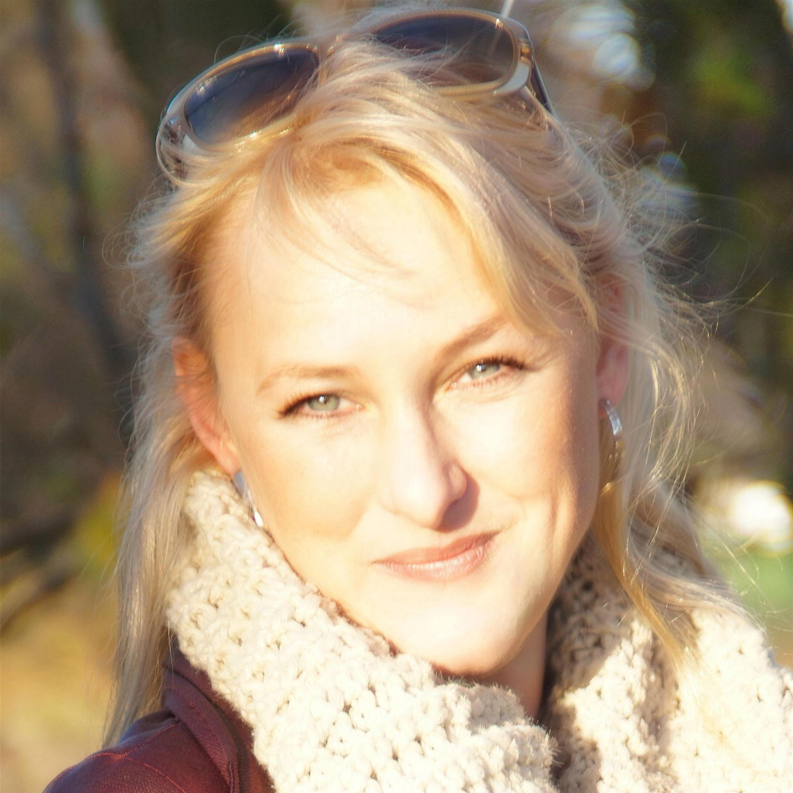
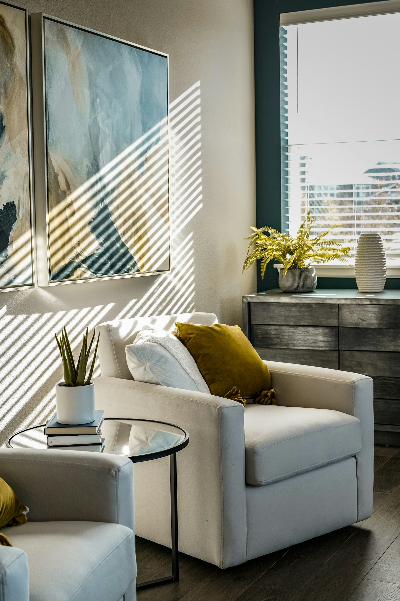

1986
Physiotherapeutin
Beginn meiner Arbeit als Physiotherapeutin, mit dem Schwerpunkt Neurologie und schwer und schwerst betroffene Menschen.
Physiotherapeutin seit 1986. Heilpraktikerin für Physiotherapie und Psychotherapie. Seit 2009 Inhaberin des Physio Rosenpark, Praxis für Physio- und Körperpsychotherapie.

Seit 1986 arbeite ich als Physiotherapeutin. Mein Schwerpunkt waren von Anfang an neurologisch schwer und schwerst betroffene Menschen.
1992 hatte meine Schwester einen Unfall. Seitdem kenne ich das Thema Wachkoma nicht nur als Therapeutin, sondern auch als Angehörige.
Meine Schwester lebt seit über 30 Jahren im Wachkoma, viele Jahre davon wurde sie zu Hause gepflegt. Auch meine Mutter ist an Demenz erkrankt. Im Umgang mit meinen Patienten, ihren Familien und meiner eigenen habe ich erlebt, wie wichtig neben der körperlichen auch die seelische Begleitung ist, für Betroffene genauso wie für Angehörige.
Deshalb habe ich mich weitergebildet: zur Heilpraktikerin für Physio- und Psychotherapie, zur Stressmanagement- und Entspannungstherapeutin, zur Achtsamkeitstrainerin. Seitdem bilde ich mich auch im neurologischen Bereich laufend fort.
„Ich biete Ihnen eine umfassende körperliche und seelische Begleitung und einen reichen Erfahrungsschatz, um diese Lebensphase lebenswert zu gestalten.“
Vierzig Jahre Physiotherapie, und jedes Jahr ist etwas dazugekommen.
Beginn meiner Arbeit als Physiotherapeutin, mit dem Schwerpunkt Neurologie und schwer und schwerst betroffene Menschen.
Durch den Unfall meiner Schwester begegnet mir das Thema Wachkoma als Therapeutin und als Angehörige. Seitdem bilde ich mich im neurologischen Bereich fort: Wachkoma, Bandscheibenvorfall, Schlaganfall, Parkinson, MS, ALS und Querschnitt.
Seitdem bin ich Inhaberin des Physio Rosenpark, meiner Praxis für Physio- und Körperpsychotherapie.
Ich behandle in meinen Praxen in Hannover und Hemmingen, mache Hausbesuche und arbeite freiberuflich für The Balance Luxury Rehab auf Mallorca.
Körper und Seele gehören zusammen. Deshalb verbinde ich Physiotherapie mit Psychotherapie, Entspannung und Achtsamkeit.
Seit 1986, mit dem Schwerpunkt Neurologie.
Körperpsychotherapie und Gespräche.
Sanfte Behandlung mit den Händen.
Wege aus Stress und Anspannung.
Bewusst wahrnehmen und zur Ruhe kommen.

Ich spreche Deutsch, Englisch und Spanisch. Ein erstes Gespräch ist unverbindlich, rufen Sie mich einfach an.